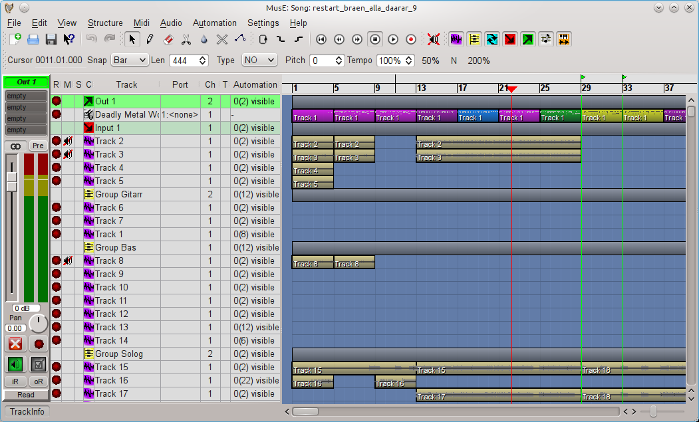

Basic overview of MusE
In this section we will make a step by step walk-through of all the different editors, their purpose and what functions they support.
Main/Arranger
Above is the main window of MusE, the Arranger, this is what greets you when launching MusE. The Arranger consists of two main parts, the Track-pane and the Arranger canvas. The Track-pane lists all currently visible tracks and the Arranger canvas contains all Parts of the composition. The screenshot above shows an empty project. Below is MusE with a song in progress, turns out it wasn’t a very good song, but for our purposes it is fine. In the below screenshot there are a lot of tracks visible in the Track-pane, each have an icon which indicate it’s type, wave-track, input, output etcetera, more about that later. In the Arranger canvas a number of parts are visible, the ones in yellow are in this composition wave files, the multicolored line are different Parts of a drum track.

Mixer
Choosing View > Mixer A or B from the menu in the main window will bring up the mixer as viewed below. The mixer will open with all options enabled, showing channel strips for all tracks in the current setup, depending on how far you have gotten this view may become very large, at which point it may be a good idea to limit what is viewed in the Mixer. From the view menu all the different kinds of tracks can be toggled on/off from the mixer. Some may find it a good idea to use the two mixers A and B setup with different setup and store this in your song template(s), more about this in the Song Template section. It can be argued that everything in MusE is a track analogous to the Unix idiom that everything is a file.
The types of tracks visible in the mixer (and track-pane) are: - Audio output - Audio input - Group track - Aux track - Wave track - Synth track - Midi track - Drum track
Keyboard shortcuts in mixer
Checkout the chapter about shortcuts for more information here.